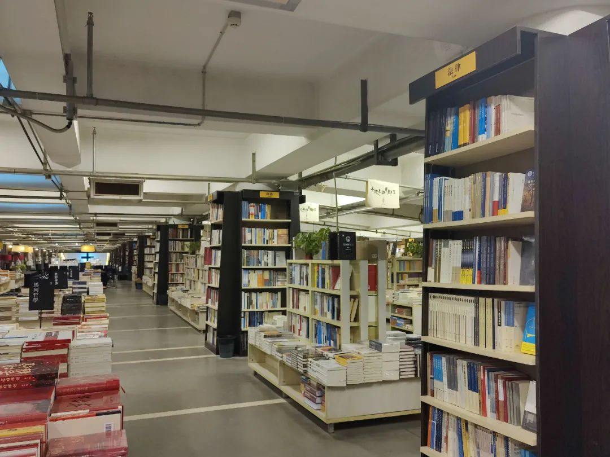
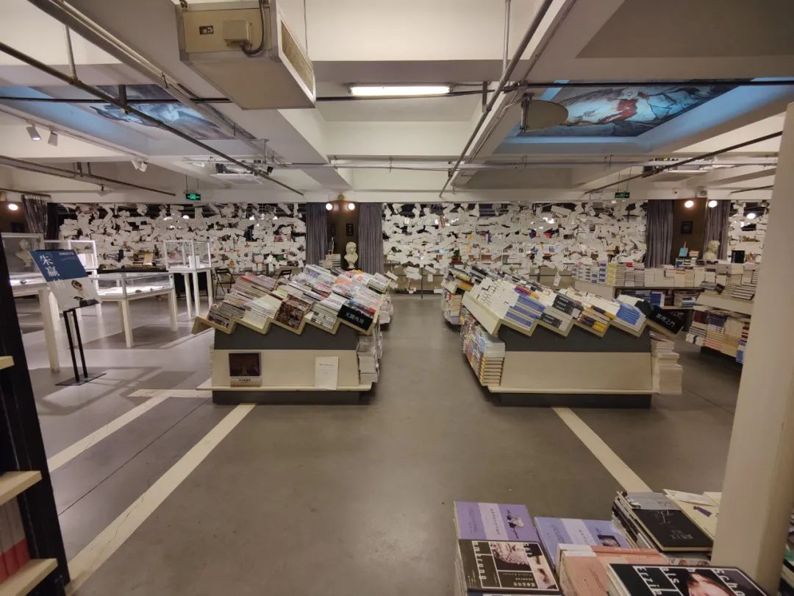

本文是张衔瑜第215篇推文
共计8049个字，2张图
掷地如作金石声。原是指的别人说的话掷地有声，扩写成了现在的样子。
我希望我的时间也有颗粒感，粒粒分明。一袋米要扛几楼，一袋米要扛二楼。小气，颗颗有泥。这种颗粒感就像大学物理(大雾)里面的动量守恒与传递模型所展示的Elastic Collision，模型上我们拿起一端的小球，放下、一碰一one by one一个买一个、理想条件下另一端的小球又弹起。
Livehouse里到处是忍不住简化为完全弹性碰撞的模型，我想表达的是如果能把我的各个时间段这样串联起来，我会觉得挺美观。虽然旅行中我大部分时候的思维模式都在宏观低速，但日程上我希望它们榫卯耦合。
这是前话。
去南京是为了看红叶。之前被南京劝返了一回，因为没有提前做核酸，不让我上飞机。那一次的旅行计划里有常州，如果当时去了南京的话，路过常州回来我就要被隔离了。那一次还是为了去看桂花，因为灵谷寺的金陵桂花王正开得茂盛。没去得成，于是下一次就立下想法，要在合适的季节去看看栖霞寺红叶。
于是就去了南京。
没有完全料得到所有的事。当然也很正常。比如我没有想到，江苏的天黑，是北京时间五点钟以前的意思。天黑是光线不足以让自然事物被相机的CMOS组件感应到，不是指的天文昏影，也不是和视杆细胞、视锥细胞去商量。
从大行宫出站，拖着箱子去了北门桥的青旅。
每到一个城市就回忆一下自己和这座城市的前缘后事似乎有些拖沓。多故事的武汉是回忆不完的，去过不多于两次的城市是三两笔就能带过的。南京，是这中间的不好说。
勘误一下：上一篇也就是2020年1月份的南京游记里，最后的李记汤包错误，应为小李汤包（殷高巷店）
从中华门城楼登上南京城墙南段。此前从未登过南京城墙，登上之后是各种羡慕。城墙根内有居民区，之外是护城的秦淮河。南京城墙根据河道延伸，形状我不需要看地图，因为上次已经在大报恩寺看过了。
红色的灯笼在城墙上隔段设置，一直把轮廓勾勒向远处。夜里，南京城墙上少行人。或者，每小时从我旁边经过的人数少于三人，和平坦宽阔的城墙道形成对比。中华门城堡，瓮城的公交车站好像是这么命名的吧。那些晚上守着城墙的人是守着时间吗？
有些印象是一样，南京的公交车是大圣的筋斗云。师傅脚一踩刹车，我就离席起飞。去吃了egg soul的新店，去了先锋书店的老店，吃了一碗没有照片的小馄饨。


早餐在总统府附近，平淡得我要去查才知道名字：好婆汤包。地铁转的士去了栖霞寺，挺远的。栖霞寺以及栖霞山，江淮多寺庙，栖霞寺有乾隆御批栖霞十景。当然，乾隆给很多地方都写过。好玩的是，在看过了许多地方的名胜古迹和绝色之后，慢慢会觉得那些共性的、有时候甚至让人觉得厌烦或许构成的是中华文化的性格底色。我的意思是，那些周遭看起来都一样、甚至有些千人一面的，这些是表面多样性建立的根基。
好多地方的古镇都一样，分别加一点不同的典故。汉传佛教的建筑里总会看到哼哈二将、四大天王、十八罗汉、左右胁侍迦叶阿难，不同的地方加以不同的造像艺术以及供养形制。其他同质化的商业元素和饥饿营销只不过是改头换面换粉换糕点。
栖霞的红叶没有全红，和我想象中在红叶王国里走来走去的样子应该不一样。只能在这里看到大概三四成的树是红色的，大概还有两成会明黄枯黄渐变的落叶，剩下的依然是北亚热带向暖温带过渡区的常绿阔叶林模样。
无论是观感还是拍照，更容易拍出来驳杂而繁芜的样子，不是弥望的震撼感。想要的那种震撼感在这次游记里会写到，现在按下不表。
从栖霞寺礼佛毕，绕周舍利塔，看到山上有很多小的洞窟，内有佛像。心想：这怎么有敦煌佛窟的意味了，赶紧来看看。
许多的洞窟里，佛像的头都被破坏砍去，就像最近古董局中局展示的真假佛头掳去一样，在栖霞山千佛岩只能想象。洞窟大小不一，小的不足成人膝盖高，大的又出乎三五米的高度。佛窟挨得很紧，无论是海拔水平的横向隔壁还是纵向垂直的隔壁，都十分紧凑。
往山上爬，我看到旁边立了一个齐人高的牌子写着栖霞飞天，对着旁边四五个洞窟。介绍牌说里边有『栖霞飞天』是和敦煌飞天比起来更早时期的壁画艺术。我一听，这不几乎等同于是必冲吗？
然而我就站在那，上下走、找了想了半天，也没看见飞天。
很不解，所以继续往山上走。碰上一位老方丈领着七八位游客下行，我赶忙去问。老方丈“你是找对地方了。但不止你看不到，大部分人都看不到。今天见到我是有缘，我带你去看。”
“栖霞飞天在102窟，要蹲下来才能看到。这一对是六朝时期的飞天。比敦煌目前知道的十六国时期北凉飞天更早。”老方丈释罢，作揖，拂衣而去，不见踪影。
留下还有继续尝试看飞天的游客。一位老人家问我什么是飞天。我用两个多月前余留的敦煌知识解释之后，老人家感慨一声“阿弥陀佛”也跟着下山去了，不见踪影。
离开栖霞山，去南京大学仙林校区外和poet吃东北菜。短暂去了南京大学仙林校区，一分钟。坐地铁去孝林卫，访灵谷寺。
灵谷寺是简单地像上次没有来，于是这次来。灵谷寺内有烈士陵园，但是进去之后觉得很安定。人们说这是因为，烈士们活着的时候都是为你而死，为什么入土之后还会来害你呢？没有这些话我也觉得很安定，有话之后强化了我的感受。
在这里第一次读到了孙文遗训全文：
灵谷寺前的银杏是不兴扫的，留客观赏。兼有金陵桂花王和一株这么茂盛的银杏的灵谷景区，确实是钟山风景区的灵秀模样。
转到明孝陵。两年前已经和Leewell去过神道石象路了，于是这次在靠苜蓿园的门边多留了一会。私以为只从看红叶或者各种草木丰茂的角度来说，要比栖霞山来得更好看一些。除了在这里找不到像栖霞一样的好听名字。可见取名字很重要。
晚上和呼呼哈HiHi在笑云开吃了汤包和鸭血粉丝。虽然没有拍照，但是味道还不错。坐上南京地铁之后再买城铁票，夜袭镇江。
//
镇江。南京作为中华民国首都的时候，这里是江苏省的省会。京口、瓜州、北固山焦山金山，江苏每个地方都不少诗词歌咏。本地人立青点名了西津渡、英国领事馆旧址和金山寺，锅盖面、镇江陈醋和肴肉。我也大抵按着顺序来。
西津渡，顾名思义。在这里能看到赵朴初题写的拱券匾额。客栈于是也就选在了西津渡里。白天在南京感觉还很热，夜来风起，降温和寒潮同时到来。Hoooly说白天那是锋前增温，冬天里适合出行爬山的时节，晚上降温下来，该回的就回了。
青旅算上我也只有三位住客，老板把手缩在棉袄口袋里问我吃不吃馄饨（胡椒粉真的不要钱吗btw）。看了看表，才十点，想着出去逛一个小时，回来再洗漱。小码头街上只有一家还开着的店，一对男女围着炉子，许多画板在旁放着，店名为画苑。
沿街往西，没想到英国领事馆旧址这么近。大范围旅途中最先看到的，就是在北海的时候看到介绍中国的近代开埠。镇海关算比较晚了Chinkiang 1861年设立。再往西，镇江博物馆员工通道的一条大黑狗拦住了我的去路。折返。

早上说想去吃锅盖面，青旅老板让我顺着大西路一直走到老宴春。进门之后延续了我对这家客栈的想法，马上出来了。找到了锅盖面品鉴馆，也在西津渡街区内，虽然人不多，但这下三样都整齐了而且多少是我觉得OK的样子。这张图也修得挺好看的就，吃的和看的都很到位。
锅盖面按介绍来说的话，是先挤压成薄饼然后刀成面条状。我印象中应该在很小的时候就吃过这种面，但是当时一心都在油炸方便面上所以没有多么心水。印象是，怎么是这个而不是那个，但这个和那个都记了下来。
服务生特地嘱咐我，肴肉不要放到面上边去。肴肉是一道凉菜，放到热的面上边就会化开。直接点上醋就可以吃了。我觉得她说得应该有道理，但是我放了一块到面上摇了摇，看是不是真的会化开。诶，她没有骗我。而且蘸醋的好喝。我甚至倒了一点醋来喝纯的醋，和平素在长沙米粉摊上摆着的冠名其他地方的醋真实不同。
英国领事馆旧址，是一个旧址。就好像有人家后边院子里有一间修得漂亮的房子，但是旧一点了，不过还能用。大概就是这种感觉。
博物馆的陈列里，特展之一是贵州的苗银，我刚刚在贵州省博物馆看过所在地的了；之二是紫砂，这个比较珍贵，前几天在航拍中国·江苏里只看到了视频而没有看到实物。
其他的早期吴越文化，我草草看过后就离开了。出门即是广肇公所，已经几乎没有古迹可寻。镇江美术馆和另一栋博物馆的楼我就没有进了。走到京口闸，打车到北固山下车，听到里边基建的声音没有停歇，转身去了金山。
我现在的脑中，金山寺已经和赵文卓紧密联系在一起。
“浪里个浪，浪里个浪。艳阳天那么风光好，红的花儿是绿的草。我乐乐呵呵向前跑，踏遍青山人未老。”
“我一眼就看出你不是人！大威天龙，大罗法咒，世尊地藏，般若诸佛。般若巴嘛哄。淦。”
以至于说镇江以前果真是长江的入海口，所以法海才在这里把洞里的蟒蛇可以直接给赶到海里去。金山寺门前写着东晋古刹，僧人教我领过三支清香后，问过属相后说“你鞠躬得往这边拜。”
苏南寺庙神奇的是，像栖霞寺金山寺这样香火很旺寺庙，其主殿背后的造像会立体。我问僧人，观音身后描绘的是什么，对曰五十三参。五十三参为善财童子发菩提心之后向五十三位善知识（我想应该就是高觉悟者）请教，请教的故事记录为五十三参。我说的不是单指故事，而还有这些背后的造像都是立体的，不是像室内攀岩的崖壁一样光滑，而是垂直面上有水平层次地存在一座座佛。
登金山顶，四下望去。长江上无论是真实存在的法海其人还是演义的法海故事，在四维空间审视起来会是什么样子呢？
回西津渡拿行李箱。顺便想去看看观音洞和救生会。
进去之后觉得还不如不进去，我看过那么多佛窟佛龛，观音洞我是最快地直接走过，直觉地让人想离开。
救生会原为长江凶险所以出海救人的纪念处，本来还挺棒的。不过我上二楼时，出现了我不喜欢的模拟真人的蜡像，而且是一排，而且其中一盏补光灯的整流器有问题一直在频闪。
总的来说西津渡这一块的体验不太好，包括客栈也是，两粒酱问我为什么定一个¥44的青旅而不是¥43或者¥45的时候我才反应过来。不过青旅本来也是在古街里，只有这个价位，放张图我在犹豫睡哪个位置的时候总觉得房梁像是风水上要把人劈开。
我不信仰各种宗教。道教的观、佛教的庙、清真教的寺、基督教天主教的堂，我都去看。有时候我不喜欢的可能是一种token或者仅仅是行为经济学描述的一种文化下人们的心理预期。同样的，那些优秀的传统我也会去欣赏，正如从敦煌到江苏的南朝四百八十寺一样。
西津渡走在小码头街上看还是很有层次感的。
//
到扬州了。打车的时候发现扬州人不怕给道路起名字起得长：烟花三月路、春风十里路。所以我选择坐公交进市里。惟觉时之枕席，失向来之烟霞。是在夕阳将落时的感受。
在福星点了一碗扬州炒饭。还有狮子头和一个肥肠臭大元（据说就是臭豆腐但还好本长沙人是在吃完写过memo之后才知道原来是臭豆腐的一种）不过这两个我不太关心。我关心的是扬州炒饭，炒饭是炒得真的好吃。
在扬州我吃了两餐扬州炒饭，给我的感觉都是：外面炒来都是扌Y炒饭，缺斤少两而又走了形貌。扬字没有了右半边，州不知道怎么变化成了英语的Y反正就很不对路子。
这句话我曾经发过朋友圈，有评论问我这会儿为什么不来张图？不应该有图为证吗？我的想法是不能让图占据了扬州炒饭本来的色香味，给一张图只能看到颜色，而且还是我调过的。那么香气和味道呢？这不就都没有了。
吃完出门。觉得太冷了，得加衣服。于是回宾馆洗澡。洗完澡觉得困了，前一天没有睡好，想要不要睡两个小时再出门。想了想，我觉得好，睡两个小时再去护城河和东关街。两个小时后，醒来。懒惰会让人摆烂，尤其是没有鞭策的时候。自律让我定下了第二天一早七点半的闹钟。
扬州早茶有三春：富春、冶春、共和春。我冲去了富春。这次出门的目的除了看南京的红叶，就是为了数一数扬州的蟹粉汤包上到底有多少个褶子。
点了一份单人套餐加汤包。服务生说汤包的褶子要超过25个，其他的包子要超过20个。我数了数我点的，蟹粉汤包28个，蟹黄包22个，三丁包21个。蟹粉汤包我数了三遍，拿着纸吸管拿着在汤包上点来点去，一会儿又拿出巨大的相机来尝试拍照，兴许店员也会觉得这人多少有些奇怪。Anyway, 我的旅行目的达到，世界和平。
吃完之后，在一线扬州三把刀的店铺里往老巷子窜。得胜桥、永胜街、石牌楼、风箱巷、皮市街，扬州老区的古井比我想象的要多得多，未曾设想的道路。可能以前看长沙水文说有彭家井水风井白沙井，但是近现代以来越来越少，就觉得别的城市水井没那么多，也不会留多少。但是扬州东关街南边的井不一样，这里的井里真的能看到水，而且里面没有杂物。没有看到附近居民有使用井水的迹象，故而在我旅途中见到有人在打水的还是在阳朔。
北行至东关街。离开苏州后，对庭院不太有兴趣，于是没有进个园，就在街上游荡。一些我想进去看个究竟或是了解一些典故的时候，却发现里面已经改做了民宿。出租车司机或餐住老板给我推荐东关街也说在晚上的时候灯光好看，不过那恰好不是我想看的，就像我对武汉和长沙的江景灯光秀的评价也是负面的一样。
打车到瘦西湖北门。想了想，就不去大明寺了。瘦西湖恰好从我到的时候开始实行淡季门票，可是为什么冷天意味着淡呢，是PV=NRT算出来的吧。
总有人想忽悠我，比如喊我去坐公园游览车。我说停停，我能走。工作人员说熟门熟路的自由行，大约两个小时北门到南门，实际上我也就走了一小时二十分钟。当然她算的也许是旺季，因为后来在蹭的讲解中听到二十四桥上边，人多的时候从桥这边到桥那边要十分钟。
我觉得二十四桥算是有些欺骗性了hhhhh不是一般的欺骗性，而是那种不知道为什么会被这个名字骗到这里来的欺骗性。青山隐隐水迢迢，秋尽江南草未凋。二十四桥明月夜，玉人何处教吹箫。实际来看也就是，一座桥、再加一个吹箫亭。
杜牧自己没什么问题，也就是一首诗。我比较奇怪的是这个传播开来的模样，好生离谱。因为也就是桥宽2.4米，上二十四级，下二十四级，再有二十四个柱子。再怎么没，好像每一个有湖的城市公园里做一些廊亭都不乏这样的例子。
所以到五亭桥边的时候，我决议不多停留，即便还说有多少郑板桥古迹什么的，我也觉得先行离开吧。似乎已经接受输入太多了。
南门出来，在刘佘记看了看菜单，转身去了四望亭旁的怡园。店员安排我入座的时候，我就知道来对了。视野和环境都太好，也没有贵得离谱，在这里还算亲民。可惜时间不够，我扒拉两巨大口阳春面和点心就飞身去了车站，干点打包在去盐城的动车上。

欠债是福星的扬州炒饭到底长什么样。
//
盐城。盐城是我上一次安排江苏旅程时的起点，渣南把我的票改来改去，换到南京之后那一次就断了。这一次盐城作为旅程的终点，扬州过后我也觉得需要一些自然风貌来调整一下眼球摄入。
出火车站，开车出站。后来显示，这一下午一共行驶了四小时两分钟，里程一百六十二公里。
我想去丹顶鹤保护基地的湿地公园，一查发现有四十多公里。虽然高德地图显示暂停营业，但是大众点评又有刚发表不久的评论。一时间我不知道到底谁更缺德一点，而过去的话只有一条公交车而且需要快两个小时，打车单边接近两百块钱。那确实不如自己开车。后来发现实在是太妙了。
进入丹顶鹤湿地保护区的一段，叫丹鹤线。丹鹤线对应的是盐城林场。我忘记是从省道还是国道拐入丹鹤线的，但在这一段，林场的样貌就已经几乎让人忘记了过来竟然是要来看丹顶鹤。
树林行道两旁，三四点的下午光映照这里，我开着车就像是听大自然在一维谱上弹奏出了空间效果。树木延伸向远方，对向来车令人觉得好似到了小兴安岭大兴安岭林区。林间巴士和朴素的公交站牌，一时我想不起自己是身在江苏之一处。
丹顶鹤保护区的工作人员说确实停止对外接待了，从今年十月十三号开始。我说我打保护区的电话也不接，市长热线也不知道，随便发了几句牢骚后我赶紧回到林场里去捕捉四点后时日无多的太阳。
晚餐我是在竹海大饭店吃的，别被竹海或者大饭店骗了，这里应该算盐城版的文和友（小型）。很吸引人的是，这里有简述盐城发展历史的展览就好比小型的城市记忆博物馆。盐城的国营历史很长、也很深刻。这是我在写游记的时候有些惊喜地发现，侧写能力在我到盐城林场加油站的时候，好像又回来了一点点的时刻。
在林场加油站附近看来往人和树木，以及还有加油站的形制，其实就在猜这个地方是不是有一些我很熟悉的计划传统。在竹海大饭店的城市记忆展览时，这一点确认。渐渐变灰的侧写本领重新上色，有种《饮食男女》片尾郎雄尝到了菜味道的感觉。
从保护区、林场回市区的时候，我刻意绕路开车去海堤公路。海堤公路并不是在悬崖绝壁旁边的栈道海堤，毕竟这边的滩涂除了划为湿地保护区，就是应用于了盐碱工业。保护区工作人员对我说：“园区停止接待了，现在也没有丹顶鹤来保护区呀。”前一句话是真的，反正那是他们自己的规定；但后一句是假的，三只野生丹顶鹤就从我的车前方飞过。我减速关灯，慢慢等它们过去，又重新开灯提速。
按扬州朋友Salomé not sleep的盐城推荐，我特别留心盐城的鱼汤面。这喝汤多是一件美事啊。在竹海吃了一次，第二天早晨我又吃了一次。
竹海这一次还有竹海的梅花糕。
我把鱼汤面旁边放上一瓶言的这种做法叫做原教旨主义盐城鱼汤面。因为是盐城，所以要有盐，有盐的意思是所有可以触及的地方都要体现有盐。湖湘地区嗜辣，早餐粉面馆桌上的辣椒都是尝试着去添加的。我想，盐城鱼汤面馆的盐也是这样吧。如果不是，就当原教旨主义破灭了。
的士师傅说：“鱼汤面除了东台，那就是盐城的最好吃了。”我不禁想东台的有多好吃。为了向我证明凤祥面馆有多好吃，师傅停止了打表，自己也下来吃一碗。
我觉得确实很棒。是鲫鱼熬成的汤，或在湖南地区称荷花鱼。鱼汤面，和鱼肉没什么关系，可能已经被利用完全了还是怎么样。鱼汤面里没有多刺的河鱼，前一天去开车过海堤公路，后厨含混地说了到底在海边的什么地方捕鱼，但是我没有听懂。
耳朵没听懂没关系，胃能听懂就足够了。胃还能说话，他说好样的。
到机场后，被盐城机场劝返，说江苏到长沙没有核酸证明不可通行。江苏之行就好笑，在机场被劝返，一次是在长沙被南京劝返、一次是在盐城被长沙劝返。当即打电话battle了一张票，去南通转广州回长沙。
那么，到南通西。
//
南通是我第一次完全不做任何准备地被丢到一个新城市。对这里的人文风貌、有哪些好玩的好看的好吃的，我都不熟。我单知道地理上这里在什么地方，知道这里有启东启吾东疆。还有一位本科同班ww的家乡在这，她说鲳鱼和带鱼要上市了。
导航到濠河风景区的博物馆旁，城市变迁什么时候都是我感兴趣的事。韬奋书店如果只是一个建在濠河边的什么别的小书店牌子倒也罢了，但是挂上邹韬奋的牌子又没有出版业的一个专栏，多少有些失望。
沿着护城河一直走。南通，人口没有到但是仰赖经济水平而开始兴建地铁的城市，濠河的护城河因而不能全部穷尽游客步道。
看了一下张謇博物馆的位置，想了想还是在老城区内逗留。走进了一片似是旧城区提质改造的地方唤作掌印巷，许多的门脸都已经被木板封上。一些看起来像原住民的人，又偷偷跑回自己家去，在不知道什么地方找着古老古早的东西。
出巷之后，看到一处巨大的暗黄色反光墙面，上书“文峰大世界”我笑想着怎么有一股浓浓的北京王府井味道，掌印巷这一片莫不会成为南通类似灵境胡同的地方。
但其实一些文艺小店应该在卫校巷，沿着南大街走不远，过巷子就到了南通大学医学院。
绕了绕。
从环城西路，经过濠阳码头，从南大祥拿了点坚果去四宜糕团店吃晚餐。
我记得我点了一小份馄饨、一小份虾仔拌面盖大排。吃了南瓜如意糕、芝麻如意糕、百果糕、青团、芝麻青团、椰蓉糕、水晶糕、红豆沙桂花糕、绿豆沙桂花糕，没吃完的就带走了。
转机广州，回到长沙。走远了其实也累，光是记述下来我做了些什么，感觉到了什么都已经文数众多。所以如果不是为了飞行而飞行的话，我飞不穷尽航司的这些票。因为我要总结、要写下来记下来，修图成文都是的。最重要的本应该还有对一座城市的总体评价，以及和之前自己曾经到过城市的比较。去过的城市越多，需要比较的内容和可比较的余地就越来越大。
那么是把旅行先进行下去，这些比较以后来做？还是停下来，把比较做完，以后再旅行呢？这个问题成了一个智力游戏，因为旅行受限于我还有多少时间以及廉价机票的有效期限；比较也是，什么时候来比较呢？现在的脑力和经验储备就可以得到一个还算不错或者至少在百分之多少地段的结果呢？都不知道。硬扯。所以我说这成了一个智力游戏，而且没有意义。反不如早上吃两碗粉，下午喝了无糖可乐还是葡萄味芬达来得起劲。
游记写到这儿吧。后话也写完了。